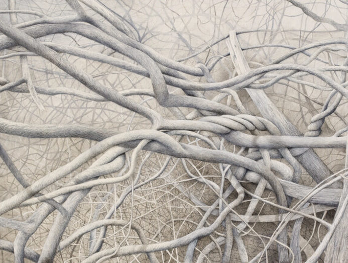
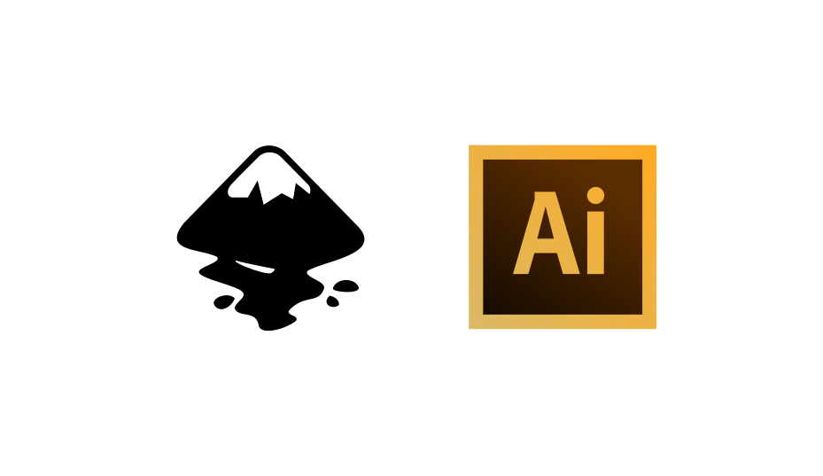

Shower Presentation Engine
Yours Truly, Famous Inc.
Секреты и наработки создания видеоскрайбинга

Этапы создания видеоролика
- Заполнение брифа
- Написание сценария
- Рисование иллюстраций
- Начитка текста
- Сборка ролика
- Звуковые эффекты
Векторные редакторы изображений

Программа для создания видеоскрайбинга
Программа для создания видеоскрайбинга